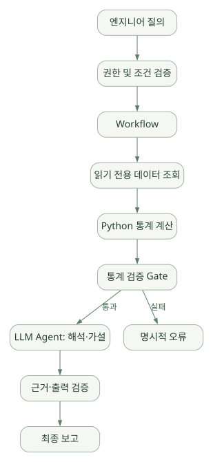
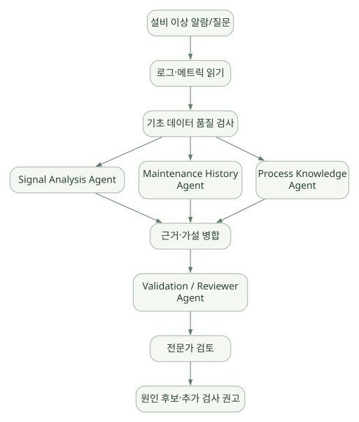

코드와 적용 / 단원 10
계산·검증·해석을 검증 가능한 업무로 묶기
기본 제공 범위와 공정 데이터·문서·설비 분석 시나리오
먼저 연결해 보기
조회와 통계 계산은 일반 코드로 재현하고, Agent는 해석과 가설 정리에 배치하는 설계에서 출발합니다. 각 단계에 데이터 계약·근거·권한을 명시하면 잘못된 결과의 원인을 확인하기 쉽습니다.
아래 세 시나리오는 실제 생산 환경 검증이 아닌 설계 제안입니다. 문서의 리비전과 ACL, 병렬 역할별 권한과 근거 병합, 전문가 검토 위치를 구체적으로 읽으세요.
읽는 관점기본 제공 기능 옆에 애플리케이션에서 직접 구현할 책임을 적어 보세요.
28. 무엇이 기본 제공되고 무엇을 직접 만들어야 하는가?#
| 기능 | 프레임워크 측 요소 | 실무에서 직접 설계·구현해야 하는 부분 |
|---|---|---|
| Agent Run | Agent, ChatClient 등 |
사용자별 서비스 API·취소·쿼터 |
| Tool | FunctionTool, MCP |
도구별 인가·업무 검증·부작용 통제 |
| Session | AgentSession/History |
사용자 소유권·저장·암호화·보존 기간 |
| Memory | Context Provider·File Memory 등 | 무엇을 기억할지, 삭제·검색 기준 |
| RAG | 검색 Tool/Context 통합 | 문서 ETL·리비전·ACL·정답 근거 검증 |
| Tool Loop | FunctionInvocation | 호출 수 상한·비용 정책·금지 도구 |
| Outer Loop | AgentLoopMiddleware | 신뢰할 완료 판단 기준 |
| Workflow | WorkflowBuilder·Executor | 단계 설계·도메인 타입·품질 Gate |
| HITL | 승인 및 RequestInfo | 승인자 권한·증빙·UX·재개 API |
| Checkpoint | 저장소와 복원 API | 외부 부작용 중복 방지·운영 모니터링 |
| Observability | OTel 등 | 기밀 마스킹·지표 정의·보존 정책 |
| Evaluation | 평가 통합 | 도메인 정답셋·회귀 테스트·모델 비교 |
| 배포 | 호스팅 통합 | 인프라 구성·고가용성·네트워크 정책 |
28.1 선택해야 할 최소 아키텍처#
작은 데모: 단일 Agent + 읽기 전용 함수 Tool + 기본 Session + 실행 로그 + 소수의 자동 테스트.
워크플로 데모: 통계 파이프라인 + 검증 Executor + 단일 Agent 분석 단계 + Checkpoint.
기업형 실험: 인증·ACL·RAG·분산 저장·승인·실행 비용 제어·평가·보안 감사.
처음부터 많은 Agent와 여러 Provider를 도입하면 어느 계층에서 오류가 났는지 설명하기 어려워진다.
29. 반도체 시나리오 A — 공정 데이터 분석 Agent#
29.1 목표#
'특정 기간에 한 공정 단계의 수율이 왜 떨어졌는가?'라는 질의에 대해, 승인된 집계 데이터를 조회하고 통계적으로 검토하여 가능한 원인과 근거를 구조화해 제시한다.
29.2 권장 구조#
넓은 도식은 가로로 이동하며 읽을 수 있습니다. 도식 크게 보기 ↗

원문에 수록된 학습용 도식입니다. 노드·화살표·분기 라벨을 보존해 다시 배치했습니다. 세부 조건과 예시·구현의 구분은 앞뒤 본문을 함께 읽으세요.
도식 원문 보기 (Mermaid)
flowchart LR
U[엔지니어 질의] --> AUTH[권한 및 조건 검증]
AUTH --> W[Workflow]
W --> SQL[읽기 전용 데이터 조회]
SQL --> STAT[Python 통계 계산]
STAT --> CHECK[통계 검증 Gate]
CHECK -->|통과| A[LLM Agent: 해석·가설]
A --> REVIEW[근거·출력 검증]
REVIEW --> REPORT[최종 보고]
CHECK -->|실패| ERROR[명시적 오류]권장: 조회, 수식 계산, 데이터 품질 검사는 일반 함수/Executor로 작성하고, 수율 원인에 대한 가설 정리·자료 설명 등 비정형 추론만 Agent에 맡긴다.
29.3 최소 Tool 설계#
# 설계 예제: 실행 가능한 실제 DB 연결 코드가 아님
class ReadOnlyMetricsTool:
async def get_yield_summary(self, *, authorized_scope, period, line, step):
# 인증된 scope만 사용하여 사전에 정의한 집계 쿼리 실행
# SQL 문장을 LLM이 직접 만드는 방식을 기본 허용하지 않음
...
class StatisticsTool:
def compare_windows(self, *, baseline: list[float], target: list[float]):
# 표본 수, 누락률, 중앙값, 분산, 신뢰구간 계산
...29.4 데이터/출력 계약#
| 필드 | 예시 | 검증 |
|---|---|---|
line_id |
인증된 한 라인 코드 | 권한 스코프와 일치 |
period |
최근 14일 | 최대 조회 기간 제한 |
feature_set |
공정 온도·압력 등 | 허용된 컬럼 집합 |
sample_count |
정수 | 최소 표본 수 기준 |
statistical_result |
계산된 수치 | Python 결과와 일치 |
hypotheses |
원인 가설 배열 | 가설이지 확정 원인이 아님 |
supporting_evidence |
조회 조건/분포/문서 | 재현 가능 식별자 |
confidence_notes |
불확실성·제약 | 과도한 단정 방지 |
29.5 평가 지표#
- 수치 계산 일치율 / 유효 범위 외 결과 비율
- 허용되지 않은 테이블/컬럼 조회 차단률
- Tool 호출 최소 횟수/최대 호출 한도
- 결측·표본 편향 발견율
- 같은 데이터에 대한 결과 편차
- 사용자에게 제시한 근거 재현 가능성
30. 반도체 시나리오 B — 기술 문서·공정 지식 Agent#
30.1 목표#
SOP, 공정 가이드, 장비 설명서, 기술 보고서 등에서 권한 내 문서만 검색하고, 버전과 출처를 제시하여 기술 질문에 답하는 Agent.
30.2 권장 구조#
질문 → 사용자 권한 및 문서 분류 확인
→ 검색 도구 또는 Context Provider
→ 문서 원문/요약 및 revision 추출
→ Agent 답변 초안
→ 근거·인용·버전 검증
→ 답변 제공30.3 핵심 설계 고려사항#
- Revision-aware 검색: 오래된 SOP와 최신 SOP가 함께 발견되면 적용 우선순위 명시.
- 권한 필터가 먼저: LLM으로 검색한 뒤 민감 문서를 제거하는 것보다 검색 단계에서 권한 검사.
- PDF/OCR 품질: 표, 이미지, 도면의 파싱 오류 처리.
- 추측 제어: 근거가 없으면 '문서에서 확인되지 않음'으로 보고.
- 출처 포맷: 문서 ID, 버전, 챕터, 유효일, 문단/페이지.
- 프롬프트 인젝션: 문서 본문에 포함된 'Tool 호출 명령'은 명령이 아니라 인용 데이터로 처리.
- 모델/서빙 제약: 공정 문서가 외부 모델 서비스로 전송될 수 있는지 정책 확인.
30.4 Agent vs Provider 결정#
- 질문마다 반드시 검색해야 한다면
ContextProvider선조회 방식이 적합할 수 있음. - 여러 문서를 반복 탐색하고 후속 검색이 필요하다면 검색 Tool 사용이 유리.
- 정밀한 인용·동적 컨텍스트·서브 질문이 섞인다면 두 방식을 결합.
31. 반도체 시나리오 C — 설비 이상 원인 분석 Multi-Agent#
31.1 목표#
설비 로그, 공정 변화, 유지보수 이력, 알람 기록을 확인하고 원인 후보를 정리하되, 생산 설비에 제어 명령을 직접 내리지 않는 데모.
31.2 구조 제안#
넓은 도식은 가로로 이동하며 읽을 수 있습니다. 도식 크게 보기 ↗

원문에 수록된 학습용 도식입니다. 노드·화살표·분기 라벨을 보존해 다시 배치했습니다. 세부 조건과 예시·구현의 구분은 앞뒤 본문을 함께 읽으세요.
도식 원문 보기 (Mermaid)
flowchart TD
IN[설비 이상 알람/질문] --> LOAD[로그·메트릭 읽기]
LOAD --> CHECK[기초 데이터 품질 검사]
CHECK --> A[Signal Analysis Agent]
CHECK --> B[Maintenance History Agent]
CHECK --> C[Process Knowledge Agent]
A --> JOIN[근거·가설 병합]
B --> JOIN
C --> JOIN
JOIN --> REV[Validation / Reviewer Agent]
REV --> HUMAN[전문가 검토]
HUMAN --> OUT[원인 후보·추가 검사 권고]추천 구성: 우선 Concurrent + Join + Validation, 필요할 때만 Magentic과 같은 동적 Manager 방식을 평가.
31.3 역할별 권한#
| 역할 | 허용할 기능 | 기본 금지할 기능 |
|---|---|---|
| Signal Analyst | 읽기 전용 로그·통계 계산 | 설비 명령 변경 |
| Maintenance Analyst | 작업 이력 검색 | 정비 지시 자동 발행 |
| Domain Expert | SOP·기술 문서 검색 | 생산 레시피 수정 |
| Reviewer | 근거 비교·불확실성 검토 | 임의 외부 전송 |
| Human Reviewer | 승인/피드백 | 시스템 경계를 우회하는 승인 |
31.4 평가 지표#
- 과거 이상 사례에 대한 Top-k 원인 후보 포함률
- 근거 없는 가설 발생률
- 잘못된 Tool 접근 차단률
- 분석 시간 및 병렬화 실효성
- 승인 중단·재개 후 중복 실행 여부
- 전문가 평가 일치율
31.5 왜 워크플로가 중심이어야 하나?#
설비 관련 분석은 데이터 준비·검증·근거 병합·사람 승인 위치가 비교적 명확하다. 순수 Agent의 자유 탐색에 모든 결정을 맡기는 것보다 결정적인 절차는 Workflow, 지식 기반 추론은 Agent로 배치하는 것이 운영상 설명과 감사에 유리하다.